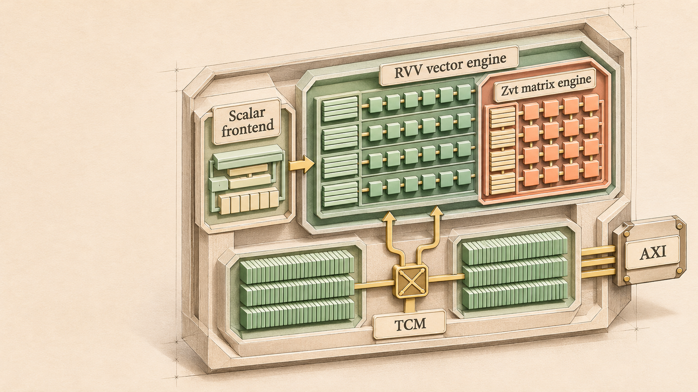

写清输入与完成条件
定义请求、响应、地址、数据、掩码、握手与复位。说明什么时候接受一笔事务，什么时候允许发送下一笔。
产物：接口表 + 时序例子把标量、向量、矩阵和存储
连接成一个可理解的系统。

Coral NPU 的本地 Fabric、TCM 和 LSU 数据回传监测，需要分别理解。NoC、缓存一致性、directory controller 在本手册中作为明确标注的系统扩展课程讲解，不能直接套入当前 IP 的框图。
查看架构核查依据 ↗02 / ANATOMY OF THE MACHINE
点击模块查看职责、接口、实现入口。
概念关系与实际目标配置分开标注。手机可横向拖动图示。
阅读 CoreMini、RVV、VME 与不同 AXI / TileLink wrapper 时，要同时确认实际构建目标、Parameters 覆盖和生成源码。基类默认宽度与具体目标覆盖应并列核对；128-bit 文档也可能对应实际构建目标。
FOLLOW ONE OPERATION
这是职责级的阅读路径，不是完整硬件逐拍仿真。每一步都能跳到对应源码。
03 / MICROARCHITECTURE LAB
改变输入、走过一个时钟边沿，
再解释状态为什么发生变化。
模型的用途：帮助理解机制和设计不变量。除单独记录的教学 RTL 对照外，这些实验不模拟完整 Coral NPU 的流水线、异常、时序或性能；NoC 与目录实验也不表示该 IP 已实现这些模块。
04 / READ, TRACE, IMPLEMENT
先读机制，再回到源文件，
最后用一个小实验检验理解。
正在连接课程与源码索引…
05 / THE SOURCE WORKBENCH
按目录、模块、类名或路径检索。
查看原始文件与固定提交的上游链接。
源码会在这里按需加载。
解析方法与覆盖率读取中…
06 / BUILD YOUR UNDERSTANDING
先确定接口和不变量，
再增加状态与并发。
定义请求、响应、地址、数据、掩码、握手与复位。说明什么时候接受一笔事务，什么时候允许发送下一笔。
产物：接口表 + 时序例子先列状态，再写组合判断和时钟更新。FIFO 指针、寄存器 busy 位、待返回事务、矩阵累加状态各有职责。
产物：状态表 + 下一状态逻辑背压时保持数据稳定；未拿到权限不应写；未完成依赖不应读旧结果；被仲裁拒绝的请求必须能重试。
产物：断言 + 定向测试组合单元会出现吞吐限制、地址冲突和环形等待。加入随机延迟、并发请求和恢复场景，先验证正确性，再讨论速度。
产物：参考模型对照 + 波形FIFO、8 寄存器 Scoreboard、两核单行目录。它们是独立教学原型，配有测试与浏览器模型，不能直接替换 Coral 的模块。
下载实现练习包 ↓接口与运行方法 ↗cd rtl
iverilog -g2012 -s tb_learning \
-o teaching.vvp learn_fifo.sv \
learn_scoreboard.sv learn_directory.sv \
tb_learning.sv
vvp teaching.vvp如果为多个 NPU Core 增加共享内存，先决定软件管理、消息传递，还是硬件缓存一致性。NoC 解决数据与消息如何到达；目录解决谁拥有缓存行权限；它们不能相互替代。
下面的课程与实验会说明这些概念和代码实现，并始终与 Coral 的实际 Fabric、TCM 路径区分。
07 / MAKE KNOWLEDGE STICK
把术语放回机制里，
用问题找到仍然模糊的地方。
建议记录：我的假设、源码证据、还需要什么实验。笔记只在当前浏览器保存。
08 / EVIDENCE, NOT GUESSWORK
源码事实、教学推演与未来扩展，
在这里有不同的身份。
与固定提交的文件、参数和模块对应。点击引用核对原文。
保留某个机制的最小状态，用来解释行为；覆盖范围单独说明。
NoC、目录与缓存一致性设计练习，不能据此声称 Coral 已有这些模块。
对 SystemVerilog 与 Scala 等源码生成可搜索的符号、端口、参数和关系索引。语法关系与特定目标的完整硬件展开分别记录；不会把文件名猜测当成实际连线。
方法、版本与覆盖限制 ↗借鉴 CodeWiki 的分层模块图与 PocketFlow 的核心抽象组织方式。课程由多位子代理阅读并核对源码编写，图片为辅助示意；没有调用这些工具的付费大模型服务。
内容核查与已知边界 ↗交互与RTL教学验证记录 ↗图片提示词与核查 ↗